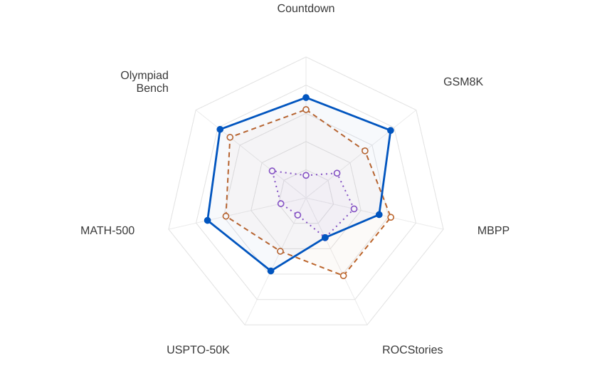

A model’s architecture tells us how to explore its weights. Use that structure to build stronger ensembles from fewer candidates.
RandOpt adds random Gaussian noise to pretrained weights, selects the best K candidates on a task, and combines their answers by voting.
Modular Norm RandOpt shapes these perturbations using each module’s natural norm, its place in the architecture, and calibrated sensitivity. The selection and voting steps stay the same.
Modular Norm RandOpt
Repeat independently for i = 1, …, 9
One independent noise draw per candidate. Schematic example: N = 9, K = 3.
Scale each tensor in its own geometry.
RandOpt uses one noise scale across tensors. Modular Norm RandOpt gives each tensor its own size, measured in its own norm.
01Allocate
Where the tensor scales come from.
Computed once, then shared by every candidate.
1 / 5 · Start with the model
Mass is an architectural weight, independent of parameter count. Only active tensors contribute to the total.
2 / 5 · Allocate to module groups
Use the fixed group weights in Table A2. Longer colored marks mean more mass.
3 / 5 · Split across repeated layers
Attention and MLP each share their mass equally across 28 layers in Qwen2.5-1.5B. Expand one layer.
4 / 5 · Divide among tensors
QKV counts as three shares; gate–up as two. Within each logical module, split its share equally over its physical tensors.
5 / 5 · Apply sensitivity correction
ρp is set once by a Jacobian-based calibration on 64 Countdown prompts and bounded to [21,2]. See Section 3.2 and Appendix A.
Worked example · Q, layer 12
Tensor mass
mp=LgMg×∑vwvwu×nu1
mQ=281/2×41×1=2241
sQ=mQmMρQ=3.2×224×ρQ=716.8ρQ
All six groups: mM=1+21+21+1+101+101=3.2
01Start with the model
Mass is an architectural weight, independent of parameter count. Only active tensors contribute to the total.
02Allocate to module groups
Use the fixed group weights in Table A2. Longer colored marks mean more mass.
Embedding1
Attention½
MLP½
Head1
Norm1/10
Other1/10
03Split across repeated layers
Attention and MLP each share their mass equally across 28 layers in Qwen2.5-1.5B. Expand one layer.
Attention · 28 equal shares
Layer 12 highlighted · mass 1/56
MLP · 28 equal shares
Layer 12 highlighted · mass 1/56
04Divide among tensors
QKV counts as three shares; gate–up as two. Within each logical module, split its share equally over its physical tensors.
Attention · QKV : O = 3 : 1
QKVO
MLP · gate/up : down = 2 : 1
gateupdown
05Apply sensitivity correction
ρp is set once by a Jacobian-based calibration on 64 Countdown prompts and bounded to [21,2]. See Section 3.2 and Appendix A.
Worked example · Q, layer 12
Tensor mass
mp=LgMg×∑vwvwu×nu1
mQ=281/2×41×1=2241
sQ=mQmMρQ=3.2×224×ρQ=716.8ρQ
All six groups: mM=1+21+21+1+101+101=3.2
02Sample
Independent noise, every time.
Draw fresh Gaussian noise for each candidate and each tensor. Every candidate starts from the same pretrained weights.
Z1,p
Z2,p
Z3,p
A fresh draw for each candidate and each tensor.
03Measure
Measure what the tensor does.
Match the norm to the tensor’s role: the strongest linear direction, the largest embedding row, or the largest coordinate.
Linear mapsSpectral normThe strongest amplification direction.
∥Z∥2=σmax(Z)
=max∥v∥2=1∥Zv∥2
EmbeddingsMaximum-row ℓ₂The largest Euclidean norm of any row.
maxr∥Zr,:∥2
=maxr∑cZrc2
1-D parametersℓ∞ normThe largest absolute coordinate.
∥z∥∞=maxj∣zj∣
04Scale
Normalize the direction. Set its size.
Normalize to unit natural norm, then set the size to R/sₚ. The direction is preserved; the scale follows the architecture.
NoiseRaw noise
NormalizeUnit norm
ScaleSize R/sₚ
The direction stays the same; its natural-norm size changes.
RandOptΔθi,p=σZi,pOne coefficient across tensors.
05Unchanged
Keep the same selection and voting.
Evaluate N candidates, keep the top K, and combine their answers by plurality voting. Only the perturbation geometry changes.
The same selection and voting procedure as RandOpt.
Stronger ensembles. From fewer candidates.
Qwen2.5-1.5B-Instruct
Mean ± sample SD over 3 seeds. Each N uses a nested prefix of the same 300 candidates per run. Candidate counts are equally spaced on the x-axis. Highlighted comparisons are differences in mean accuracy.
Performance across seven tasks.
Qwen2.5-Instruct
N = 100 · K = 25 · Mean over 3 seeds · Scores (%)

Comparison with iterative baselines
Qwen2.5-1.5B-Instruct
Countdown
1,500 test examples
GSM8K
1,319 test examples
Total model–prompt evaluations
One evaluation is one model generating and scoring one prompt. Totals include search, checkpoint selection, and final evaluation (Appendix D.2). Points show mean accuracy over 3 seeds. Iterative baselines use K=1.